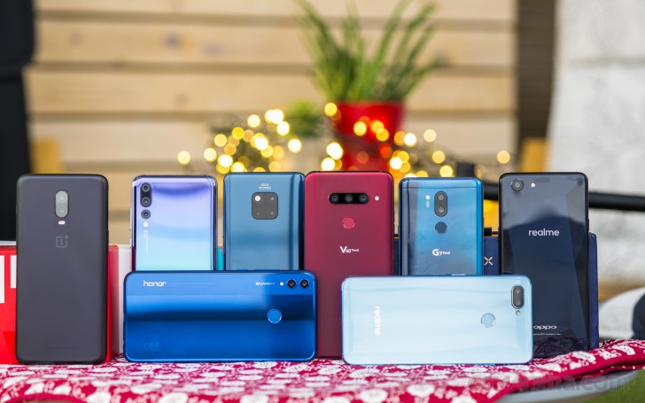
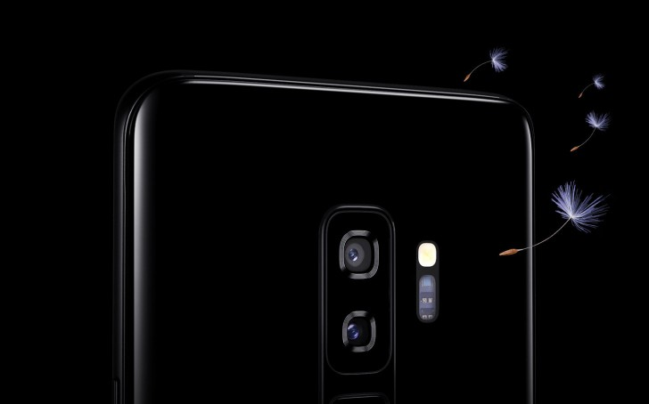
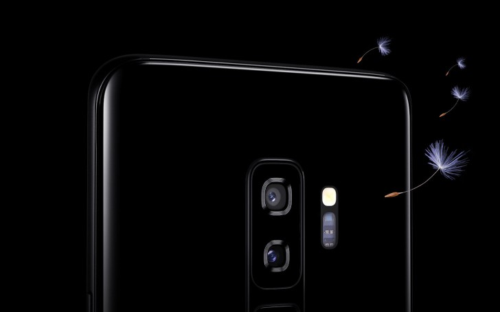

NEWS


Smartphone buyer's guide
Decisions, decisions, decisions. The holiday season is upon us and 'tis the season of joy and happiness. But it could also be one of the most stressful events each year because them presents won't buy themselves, will they?. More ...

The top Galaxy S10 models will have a ceramic back
Samsung has been using glass backs for its flagships since 2015’s Galaxy S6. Starting next year, the cream of the Galaxy crop may be using ceramic instead. Not the base Galaxy S10, though - it will get glass to go with that flat screen. More ...
Oppo announces bright ColorOS 6.0 with machine learning and new font
During a special event in Shenzhen, celebrating the fifth anniversary of ColorOS, Oppo announced the next installment of its launcher - ColorOS 6.0 - and mentioned that ColorOS is installed on more than 250 million devices in over 140 countries and regions. More ...